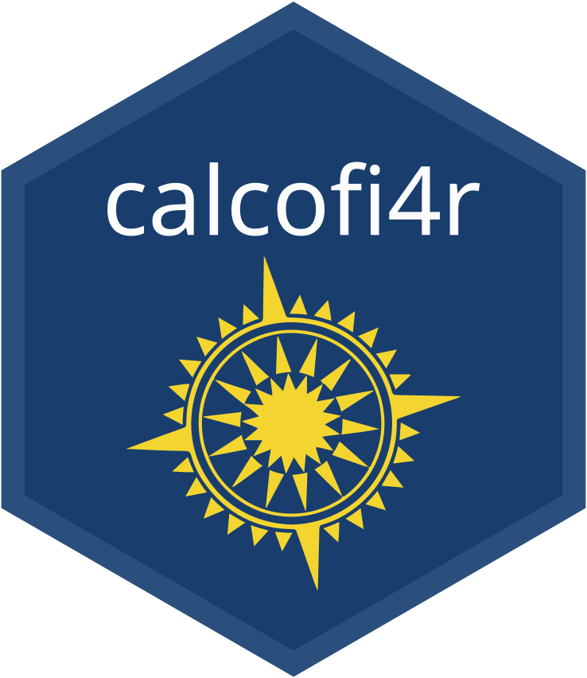

Anomalies in 10 m depth bins, any dataset (bottle 1949-, CTD 1993-)
Source:R/bin_anomaly.R
cc_bin_anomaly.RdOne row per dataset x cruise x station x 10 m depth bin x variable: the mean of the
quality-ok observations in the bin (obs_env), beside the release's climatology cell for
the same dataset, station (site_key), the cruise's month (or season) and bin, and the
difference. This is how the release's apps compute an anomaly: the climatology is built from
these same rows (calcofi4db::build_climatology()), so a bin's value and its baseline are on
the same footing. (A 1 m value from obs_ctd_full against this baseline reads about 0.2 °C
cool in a stratified layer, because the thinned CTD samples sit toward the top of each bin.)
Usage
cc_bin_anomaly(
con,
variables = c(calcofi_bottle = "temperature", `calcofi_ctd-cast` = "temperature_ave"),
site_key = NULL,
cruise_key = NULL,
depth_max = 500,
season = FALSE
)Arguments
- con
DuckDB connection to a release (
cc_get_db()), v2026.10 or later (obs_envwithdepth_bin,qual_okandcruise_month;climatologygrained onsite_key).- variables
named character: the measurement type of each dataset, the names being the
dataset_keys; repeat a name for several types of one dataset. The default pairs bottle temperature with the CTD's sensor-pair average; salinity iscalcofi_bottle = "salinity"with"calcofi_ctd-cast" = "salinity_ave_corr", oxygen"oxygen_ml_l"with"oxygen_ml_l_ave_sta_corr", nitrate"nitrate"with"est_nitrate_sta_corr".- site_key
optional station(s), e.g.
"093.3 030.0".- cruise_key
optional cruise key(s).
- depth_max
deepest bin returned (m, its shallow edge).
- season
FALSE(default) for the monthly baseline;TRUEfor the seasonal one (DJF / MAM / JJA / SON), which also covers a cruise whose month has fewer than five baseline cruises (fall 1997 is a September cruise).
Value
Tibble: dataset_key, cruise_key, site_key, grid_key, year and month (the
cruise's), datetime (the first observation in the bin), depth_bin, variable, value,
n_obs, clim_mean, clim_sd, n_cruises, anomaly, anomaly_sd; attributes baseline
and period. A bin with no baseline cell has anomaly NA, never 0.
Details
The bottle series (calcofi_bottle, 1949-2021 in releases of 2026) and the CTD's
(calcofi_ctd-cast, 1993 on) overlap for 1993-2021, so the switch from one to the other can
be checked rather than assumed. Each is differenced against its own dataset's baseline, never a
pooled one. Bottle samples sit at standard depths (0, 10, 20, 30, 50, 75, 100 m ...), so a
bottle cast has no value in some bins the CTD fills (40 m, 60 m, ...); cc_layer_mean()
interpolates each cast in depth before averaging a layer.
See also
cc_layer_mean() to average a layer per cast; cc_isopycnal_anomaly() for the same
question on density surfaces.
Examples
if (FALSE) { # \dontrun{
con <- cc_get_db()
scb <- c("093.3 026.7", "093.3 028.0", "093.3 030.0", "090.0 028.0", "090.0 030.0",
"086.7 033.0", "086.7 035.0")
b <- cc_bin_anomaly(con, site_key = scb, depth_max = 200, season = TRUE)
cc_layer_mean(b, top = 0, bottom = 40) # 0-50 m: the bins 0, 10, ..., 40
} # }